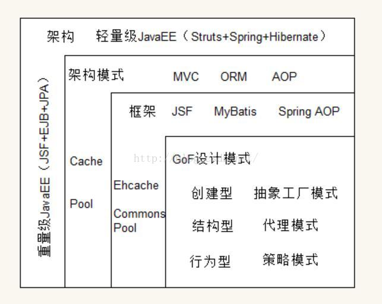

先说一下，MVC是啥？
说说我觉得最靠谱的一种说法吧，MVC是个架构模式。 它不描述系统架构，也不指定使用什么技术，仅仅是描述系统架构的一种模式，而具体的框架，是基于它实现的
然后我找到了一张图
啊，好多知识盲区！我决定一个一个啃
设计模式(Design pattern)：
其实这个词，我也在学习JavaScript中了解过，那些工厂模式、原型模式、构造函数模式等等其实都是设计模式， 一般是创建大量的具有相似属性或者方法的对象的时使用设计模式，因为这样可以省去冗余代码。
然后放一下我找到的比较官方的定义：
是一套被反复使用、多数人知道的、经过分类编目的、代码设计经验的总结。 从定义上看，它涉及到了代码级别，侧重于解决实际的现实的问题。 比如我们应该如何为不同的商品设计折扣的方式，采用策略模式呗。
那看来我理解的出入不大，但是由于我一直在自娱自乐的写代码，还没怎么用到过设计模式......(场面一度非常尴尬)
框架(Framework)：
一直不太明白框架和库的区别，然后我就顺便去查了一下
your code calls a library but a framework calls your code.
也就是说，库（类似于jQuery）是你去控制它，而你被框架(类似React之类)控制
- 库是将代码集合成的一个产品，供程序员调用。
- 框架则是为解决一个(一类)问题而开发的产品，框架用户一般只需要使用框架提供的类或函数，即可实现全部功能。
然后是官方对框架的描述
是整个或部分系统的可重用设计，表现为一组抽象构件及构件实例间交互的方法;另一种定义认为，框架是可被应用开发者定制的应用骨架。前者是从应用方面而后者是从目的方面给出的定义。
架构模式（架构风格）：
一个架构模式描述软件系统里的基本的结构组织或纲要。架构模式提供一些呈先定义好的子系统，指定它们的责任，并给出把它们组织在一起的法则和指南。从定义上来看，它是在指导我们如何组织代码，是一种具有指导意义的思想，比如要解决系统的数据与显示分离的问题，那就使用MVC模式呗。
软件架构（software architecture）：
是一系列相关的抽象模式，用于指导大型软件系统各个方面的设计。 软件架构是一个系统的草图。软件架构描述的对象是直接构成系统的抽象组件。各个组件之间的连接则明确和相对细致地描述组件之间的通讯。在实现阶段，这些抽象组件被细化为实际的组件，比如具体某个类或者对象。比如，我们要开发一个在线测评系统，使用什么架构呢？轻量级的SSH还是重量级的EJB？自己决定吧。